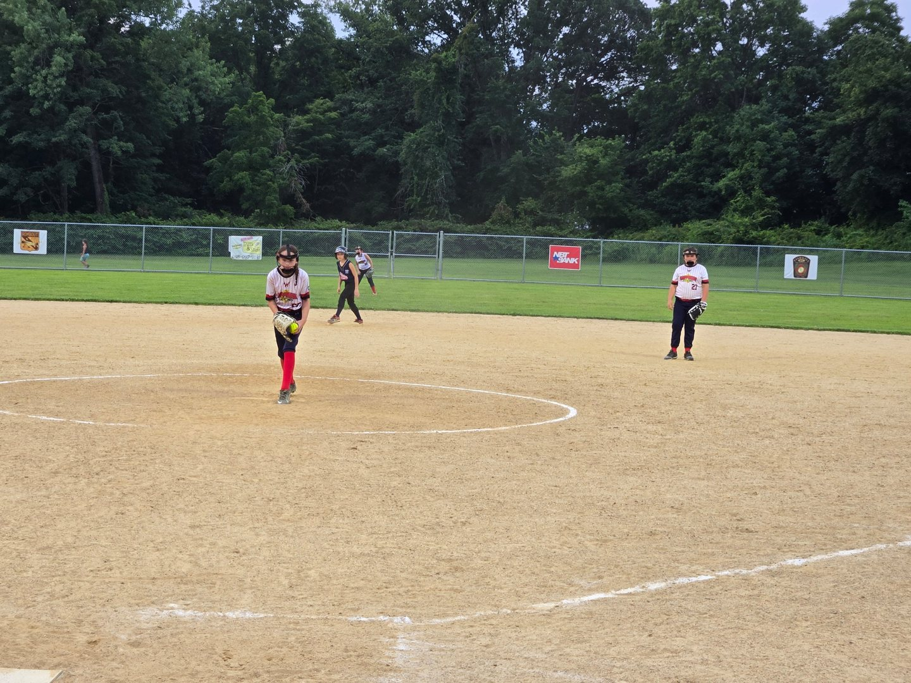
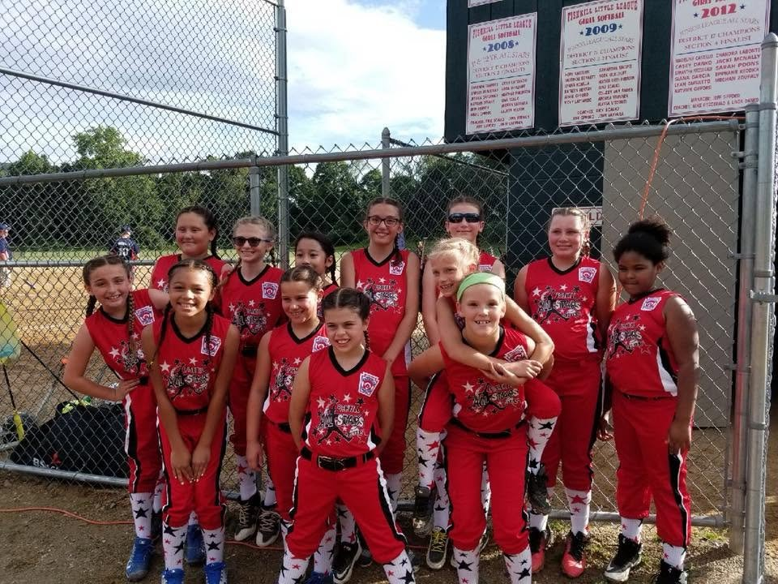

Coach Pitch
Learn to hit coach-delivered pitches, run the bases and field as a team.
View registration details
Fishkill Little League offers girls’ softball from Coach Pitch through Senior for families in Fishkill, Beacon, East Fishkill, Glenham, Brinckerhoff and nearby communities. Start with the division guide to see the age ranges and what players learn at each level.
Tee Ball is coed. Boys and girls ages 5–6 play together. Choose Monday Tee Ball or Tuesday Tee Ball. Softball divisions from Coach Pitch through Senior are for girls.
Our primary home is Robert G. Shepheard Memorial Park in Fishkill, NY. Email the league if you have questions about your player’s division or eligibility.
See who can play softball from Beacon and nearby communities or check an address in the Little League Finder.

Fishkill Little League Softball offers instruction, competition, teamwork, and leadership opportunities for girls ages 6 through 16.
Players develop softball fundamentals while building confidence and friendships that last beyond the season.
Softball league age is based on your child’s age on . This cutoff applies to all softball divisions.
Learn to hit coach-delivered pitches, run the bases and field as a team.
View registration detailsBuild confidence in player-pitch games and develop pitching, hitting and defensive skills.
View registration detailsBuild on fastpitch fundamentals with more game strategy and team play.
View registration detailsKeep developing fastpitch skills and game strategy in the Junior division.
View registration detailsContinue competitive fastpitch softball in the league’s oldest division.
View registration details
Fishkill Little League Softball continues a tradition that spans generations of players throughout Southern Dutchess.